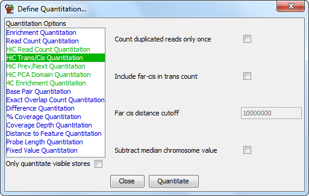

HiC Trans Cis Quantitation
The trans cis quantitation method simply works out the percentage of HiC ends
for each probe which fall into a trans location. Completely randomly ligated
data will generally have a high trans component (anything up to 90%), and this
will fall to around 50% for good real HiC datasets - though the exact values
will vary depending on the number and size of the chromosomes in the genome.

Options
The options you have for this module are:
- Whether you want to count far-cis interactions with the trans hits. If you
choose this option you can select the distance over which cis pairs will be
counted as trans (the default is 10Mbp).
-
Whether you want to remove duplicate HiC pairs when counting.
-
Whether you'd like to see the final values with the median value for the associated
chromosome subtracted. Different chromosomes will have different biases for
trans percentages due to their differing lengths. Subtracting the median
chromosome value allows you to better see any positional variation in the trans
percentage.